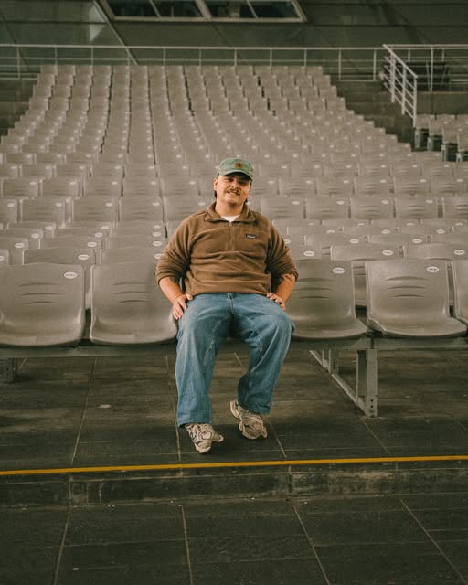

Instagram Post

This is one of the best animated movies of the decade, and it's so tense that...
video transcript (enriched by ClaudeClaw)
Summary
[VIDEO]
This is one of the best animated movies of the decade, and it's so tense that it literally had me gripping the edge of my seat the entire time. This is day two of exploring some of the most visually stunning animated films that you might have missed.
[VIDEO]
This is one of the best animated movies of the decade, and it's so tense that it literally had me gripping the edge of my seat the entire time. This is day two of exploring some of the most visually stunning animated films that you might have missed. And today's film is genuinely jaw-dropping. This is Patrick Imbert's The Summit of the Gods. The film follows Fukamachi, a Japanese photojournalist sent to Kathmandu to document mountaineering expeditions in the Himalayas, capturing the lives of these climbers who passed through on their way to Everest. But whilst he's working there, he stumbles across something that immediately catches his attention. A camera that might hold the answer to a decades-old mystery. Was George Mallory actually the first man to summit Everest? But the hunt for that camera leads him somewhere else entirely, to Habu Joji, an enigmatic climber who's spent his entire life chasing something up there, and lost almost everything else on the way. And I genuinely lost count of how many times my jaw hit the floor whilst watching this, and not just because of the scale of the whole thing. Even
View original on Instagram Post →